La gota que derramó el vaso
"La gota que derramó el vaso"busca perpetuar la historia que se genera hoy en día con los hechos históricos que dejaron las manifestaciones, esto debido a que los hechos que han ocurrido en los últimos años han dejado una huella de la cual podemos aprender valores sociales, políticos y económicos.
PARO NACIONAL
UNIVERSIDAD DE SAN BUENAVENTURA - SEDE BOGOTÁ. PROGRAMA INGENIERÍA MULTIMEDIA. 2021
La idea del paro nacional ha azotado al país durante años
Creado por gente inconforme con las políticas y leyes que rigen el actual territorio del país, dando así un avance al cambio y formalización de la igualdad de los derechos y deberes colombianos; una idea ferviente que ha concurrido tanto tiempo en la mentalidad ciudadana ha dado muchos frutos en la forma de vivir de las personas pero con el paso del mismo, junto con los cambios de gobiernos y leyes, la idea de paro cada vez se tergiversa más, por aquellos que piensan de forma anárquica o vandálica, o por otro lado romantizando la violencia de la parte gubernamental o ciudadana como excusa para crear un orden y un estilo de vida digno para la parte opositora.
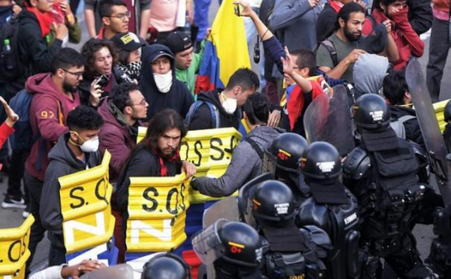Con las diversas formas, muchas de estas pacificas, de construir un nuevo formato de igualdad, una nueva forma de gobierno, ¿Por qué entre tantas marchas y revueltas, el paro a nivel nacional ha resultado ser la idea más fuerte en estos últimos años para hacer notar a los dirigentes colombianos que el país, y por lo tanto los ciudadanos están en decadencia? Esto puede ser resuelto en diferentes aspectos dependiendo de los años y cada uno puede tener diversos subtemas, debió a que las motivaciones de cada
uno de los movimientos a partir de estos últimos años han ido cambiando poco a poco, y más sabiendo los recientes acontecimientos que han sucedido estos años, como el bajo índice de generación de nuevos empleos, reformas injustas para el pueblo colombiano y el reciente virus sars-cov-2 junto a la pandemia obligatoria que imponía un estilo de vida muy diferente al que se estaba acostumbrando; todas estas causas combinadas con el espíritu de cambio del colombiano provocan lo que se conoce como un paro nacional.
El inconformismo del ciudadano cada vez se ha hecho más notable hasta el punto de recurrir a estos actos mayormente pacíficos, la movilización de todo un país por contrarrestar las injustas normas frente a las instituciones del gobierno que los rige y dentro de esto genera un gran descontento. El propósito del paro es hacer cambiar la mentalidad de la institución política colombiana, buscando igualdad y respeto para las clases bajas y medias del país y así controlar el abuso por parte del gobierno para las mismas y de las cuales se evidenciarán de aquí en adelante.
Para hablar del paro nacional y de las revueltas en contra del gobierno, primero se tiene que aclarar las causas que unifican este descontento, estas se pueden conformar de la parte política, social y económica, cada una de estas da para un apartado propio y conciso de cómo, desde el 2019, año en que se notó más la injusticia por parte de las instituciones gubernamentales hacia el pueblo colombiano da a conocer la desigualdad de forma desmedida.
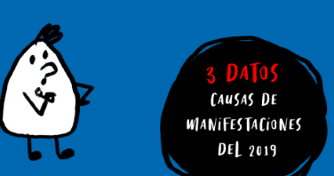En el año 2019 el gobierno colombiano tenía ya fallo por cumplir acuerdos con Fecode , con trabajadores estatales y estudiantes cuyas pensiones las daban las instituciones de estudio público, de igual forma se evidenciaba ya la injusticia por incumplir los tratos, subsidios y protección dados a los indígenas y a los campesinos alejados de las grandes ciudades, por los cuales los grupos armados al margen de la ley junto a grupos divergentes del cuerpo militar colombiano, tomaron esto como oportunidad de aprovecharse del indefenso.
Otra de las grandes razones por lo cual se produjo un paro nacional ese año, específicamente desde el 21 de noviembre, fue la supuesta nueva reforma laboral que iban a imponer al salario de primeros empleos y de empresas y empleados jóvenes de Colombia, de la cual deberían recibir un 75% del salario mínimo de ese entonces, así como crear un salario diferencial por regiones, contratación por horas y eliminación del salario mínimo impuesto normalmente, esto no solo por regiones del país, sino además de las zonas sociales o estratos creados dentro de las mismas ciudades del país (Las 10 razones del paro nacional del 21 de noviembre, 2019).
Las organizaciones del paro nacional se formaron también a partir de una reforma a la pensión de las personas de la tercera edad, por la cual los siguientes pensionados o personas a pensionar no tendrían derecho a esta debido a que la eliminarían por completo; argumentando que convertirían a aquellas instituciones en fondos privados y que se acordaría en dar una pensión mínima requerida a todas las personas que cumplieran la edad reglamentaria. Otra de las razones por las cuales el paro nacional fue impuesto fue debido a las privatizaciones completas de ciertas instituciones, tales como Ecopetrol, ISA, CENIT, empresas electrificadoras regionales y empresas donde la participación del estado sea menor a la del pueblo en un 50%
Frente a esto, la causa mayor fue un gobierno que buscaba y sigue buscando restringir al máximo la protesta social, el impulso de innovación colombiana y buscar criminalizar y estigmatizar, haciendo que estos formen un desapego a este sentimiento de descontento y de lucha hacia una patria justa para todos.
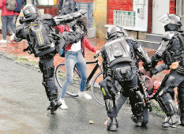Todas estas causas provocaron al pueblo colombiano a marchar en pro de la igualdad y del respeto hasta su dignidad ciudadana desde el 21 de noviembre hasta el 20 de febrero del 2020 ; dentro de estas fechas el cambio hasta las reformas, hacia los trámites para un estilo de vida las justo fueron claras pero también con drásticas consecuencias, siendo en la capital de Colombia, Bogotá, el lugar donde más marchas se realizaron y donde, desafortunadamente, se causaron más incidentes a la vida de los ciudadanos. Las marchas finalizaron con 3 muertos confirmados, poco más de 250 heridos y 100 arrestados, donde más de 1 millón y medio de colombianos se unió para luchar por la desigualdad.
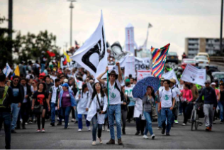Toda esa lucha durante ese periodo de tiempo cambiaron el estado, que aunque no fue del todo esperado, fueron beneficios para el estilo de vida digno por el cual se peleaba, tales como el retiro de las reformas tributaria y de pensión, creando así un sustento mejor para la calidad de vida de la gente, además de que se abrieron los procesos de ley anticorrupción o también llamada la consulta popular anticorrupción de Colombia, para así reducir impuestos y tarifado de muchas de las deudas del colombiano promedio.
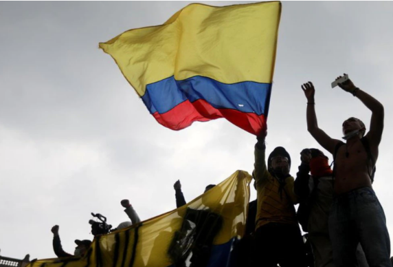Aunque muchas cosas cambiaron para bien con el tiempo, esto no fue más que un placebo para las marchas cesaran, con el reciente virus sars-cov-2 llegando al país desde las fronteras aéreas y náuticas se organizó una cuarentena preventiva obligatoria, más esto acabo con mucha de la economía para las clases bajas y medias, y a pesar de los esfuerzos de las mismas no se logró un amplio amortiguamiento en los egresos de los colombianos, muchos trabajos perdidos, locales y sitios públicos cerrados u obligados a cambiar drásticamente para intentar adecuarse a los nuevos estándares de salud y estilo de vida remoto que se manifiesta hasta el día de hoy.
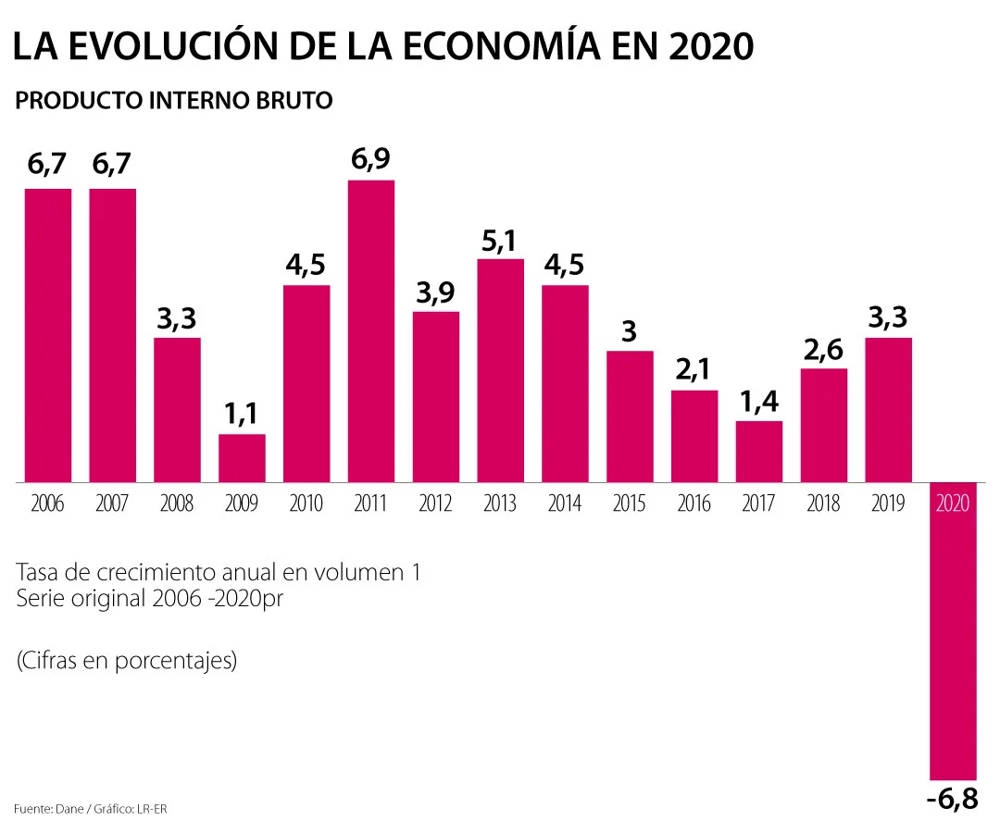2020 fue un año de cambio para la sociedad a nivel mundial, el diario vivir se pasó a un entorno virtual donde muchos trabajos o se adaptaban o desafortunadamente cerraban, gracias a eso mucha gente se quedó sin ingresos para sus hogares y por lo tanto el déficit de pobreza creció
fue un año donde la búsqueda de la seguridad económica fue fundamental para la retoma del espacio socio económico que en ese momento, luego de las recientes marchas del año anterior fueran acordadas y puestas a deliberación por los dirigentes y el pueblo, gracias a ello, el 27 y 28 de abril para ser exacto, se formaron de nuevo protestas por el delicado equilibrio que, con la nueva normalidad formada a partir de la pandemia, hizo que los ciudadanos revotaron de nuevo sus inconformismos hacia un gobierno que no cumplió con lo prometido como también desangraba económicamente a sus habitantes . Fueron dos días en los que se marchó de forma pacífica por parte de la ciudadanía para fomentar un cambio entorno a la paz y el respeto con los allegados y donde, debido a la misma pandemia se tuvieron que suspender debido al alto índice de contagiados.
A pesar de la pandemia, la forma de pensar de la ciudadanía no cambiaba, se buscó una mejoría a lo largo del año hasta el 19 de noviembre, donde volvieron a marchar debido a la negativa intervención por parte del presidente en turno Iván Duque a los diálogos con varios gremios del país encargados del transporte, de la alimentación y educación del pueblo.
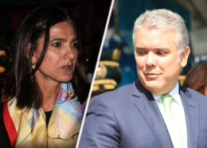Las marchas se extendieron hasta el 25 del mismo mes, donde el gobierno, harto de las acusaciones y cierre de vías se dispuso de nuevo al dialogo con una posible apertura de sitios de comercio debió a las recientes noticias de vacunas para el virus que se desarrollaban en laboratorios a lo largo del mundo.
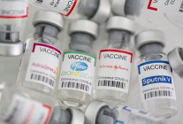Ese fatídico año se terminó a un terrible precio, muchas vidas dentro del territorio colombiano terminaron apagándose y más a un a nivel mundial
con los recientes fallecimientos y la esperanza de formar una nueva normalidad debido a la reciente inmunidad por las vacunas contra el sars-cov-2 el gobierno promovió el libre comercio y socialización por parte de varias ciudades a lo largo del país, entre ellas Bogotá.
pero el debido pico de inconformidad creado por una deuda que hasta el momento el pueblo había sido ignorante de ella seria latente, tal como es la obligación con el Banco de la Republica la cual creció hasta un 8,31%
la forma en la cual la ciudadanía se enteró de estas premisas fue dura, un cambio directo a su formación económica y una nueva reforma iba a alterar poco a poco el ámbito de resurgimiento y orden que había traído el gobierno gracias a la pandemia, por lo que el 27 de abril de este año hasta el reciente mes de julio se arremetió un nuevo paro nacional en contra de los nuevos cambios a la estabilidad del ciudadano.
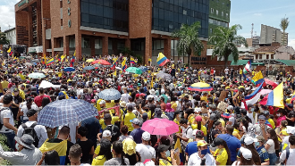La formalización de nuevas reformas, tales como la reforma tributaria que siguiendo los lineamentos del Fondo Monetario Internacional buscaba aumentar los impuestos de la clase media, y fomentar nuevos para la clase baja dejando a aquellos que no tengan más de 2 salarios mínimos vigentes a la fecha tengan una reducción en sus ingresos de forma vandálica.Lo siguiente pero no menos importante fue una reforma a la salud y pensión que, de nuevo, planteara a grandes rasgos la reorganización del sistema de los mismos a uno enteramente privado y negando la prestación de servicios de primera categoría como lo es la salud a todos fuera del alcance de aquellos que no puedan pagarla.
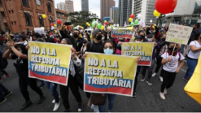El paro nacional es y será una opción para levantar la voz por encima de la mala praxis que genera el gobierno con el país, donde los más privilegiados, en su afán de acaparar más y más beneficios para ellos no conciben ni por un momento el bienestar del más dignificado, estos movimientos a lo largo de los años dan a entender que el pueblo siempre tendrá la última palabra, tendrán el inicio de las negociaciones y la formalización de crear un nuevo futuro tanto para su política como para su sociedad, tendrá la medicina para fomentar el réquiem de un país que desde hace años lleva enfermo de corrupción y, como un paciente en camilla, lucha día a día de la mano con la fuerza y voluntad que arraiga fuertemente en su interior, y la del país es el ciudadano que día a día busca un futuro mejor.
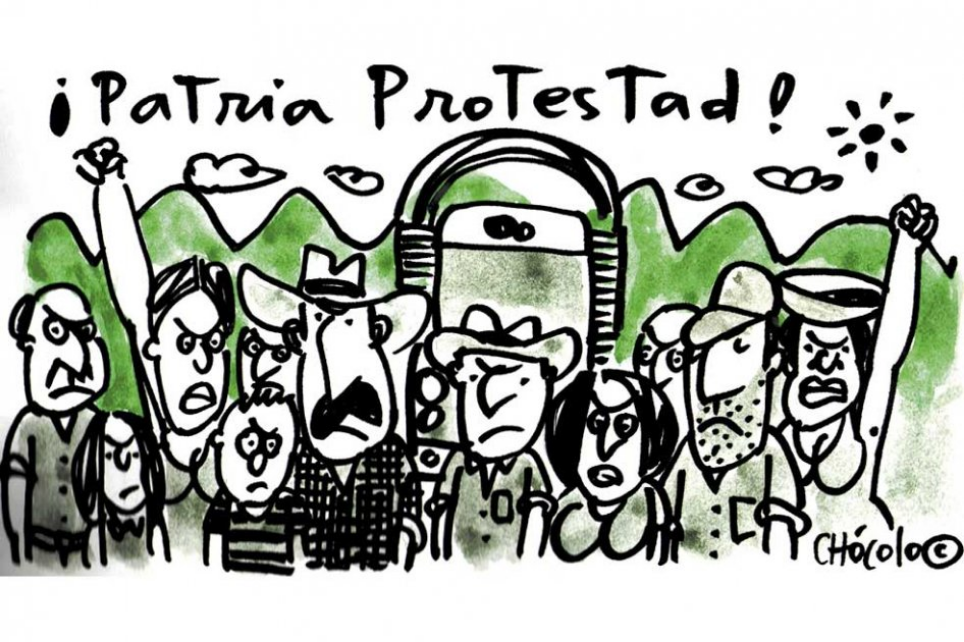